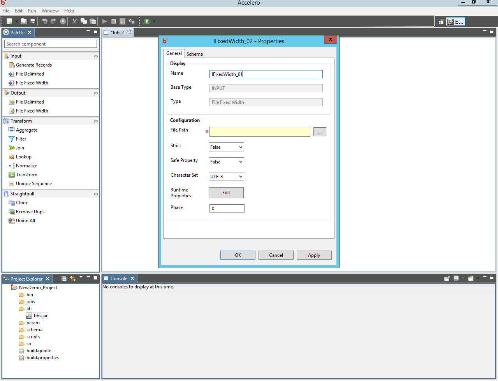
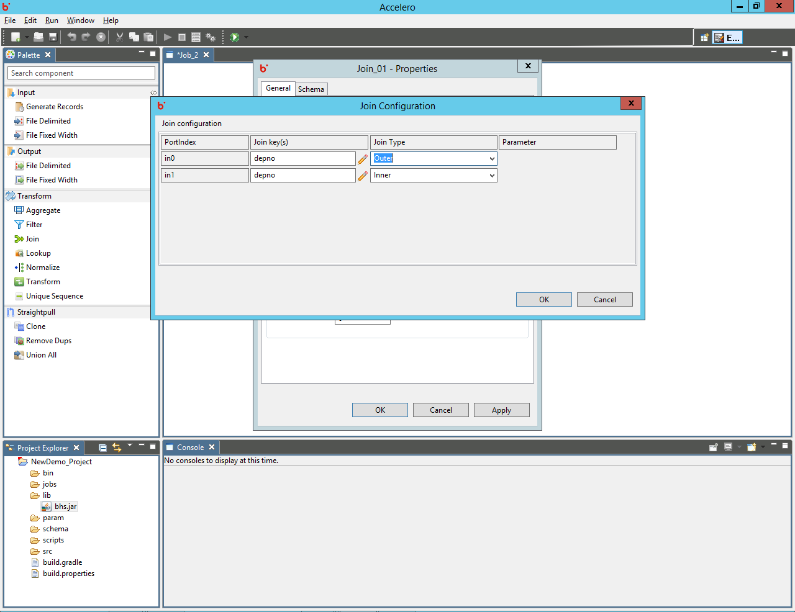
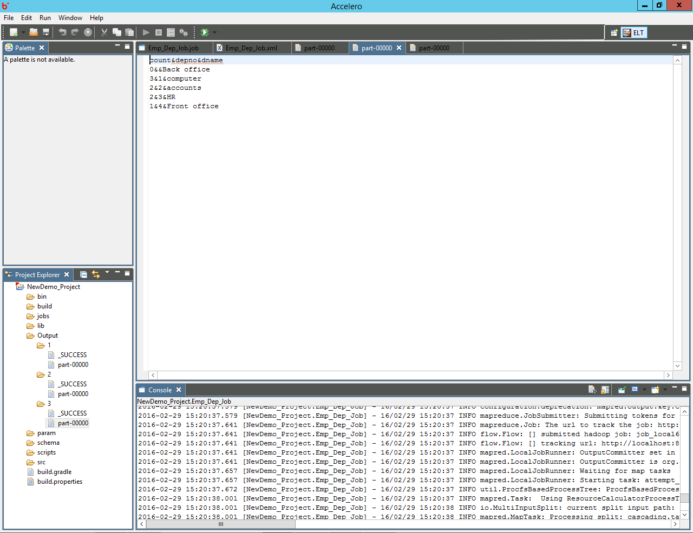

Hydrograph Help
Hydrograph Help
Job Examples
Hydrograph Release Version 1.0
Example 1:
Let's create a simple job where we have a input file delimited component that transfers output to an output file delimited changing just the delimiter.
We will be using the below input files which are ',' delimited.
Drag an input file delimited component -> In the properties tab add the path of the input file -> specify the delimiter, provide values for parameters has header, phase, strict, safe and character set
Add the schema as in the file
Drag another input file delimited component -> connect it to the previous component -> specify the output location -> provide values for delim, safe, strict, has header, charset and phase properties
Schema propagates from input to output automatically.
Save & Run the job and view progress on the console. Once complete, check the output in the output folder.
Example 2:
Let's create another job where we have two input file delimited components that involves use of multiple components like Join, Aggregate, Clone etc.
We will be using the below input files which are ',' delimited.
Drag an input file delimited component -> In the properties tab add the path of the input file -> specify the delimiter, provide values for parameters has header, phase, strict, safe and character set

Add the schema as in the file
Drag another input file delimited component -> provide values for delim, safe, strict, has header, charset and phase properties and provide schema as in the above component


Drag the Join component
Connect input files to Join component - > fill the Join properties as in the below screenshots:


Open the Join mapping view -> Drag fields into the center grid -> rename fields in case of Map fields and leave as is for Passthrough fields.
The output fields can be viewed in the schema tab along with specified datatypes.
Drag the Aggregate component -> connect it to the Join output
Fill properties for the Aggregate component present on the General tab
Open the Aggregate mapping view->drag fields on which the operation needs to be performed -> Select a standard operation class -> specify the output fields
The output fields can be viewed in the schema tab along with specified datatypes for Passthrough or Map fields. The operation output fields are assigned default 'string' datatype and need to be changed accordingly by the user.
Drag the Clone component -> Drag Multiple output components and connect them to clone -> Provide properties like output folder path, delim, safe, strict, phase etc.
Complete job flow will look something like below:

Save and Run the job -> check progress of the job on the console -> Wait for the job to complete successfully.


View the output folders in the project explorer since we did not provide any external file system path -> open and check output for each output folder
